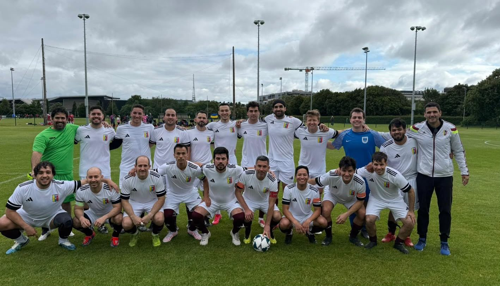
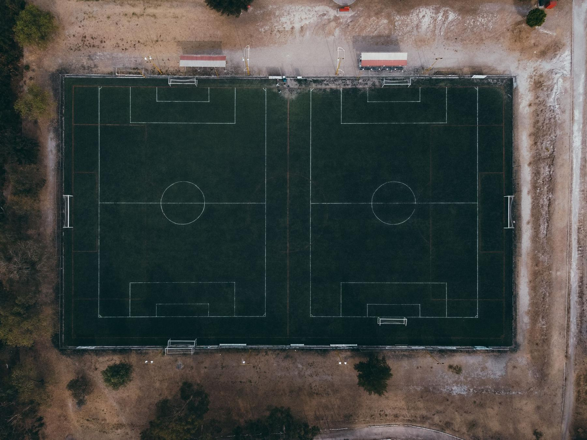
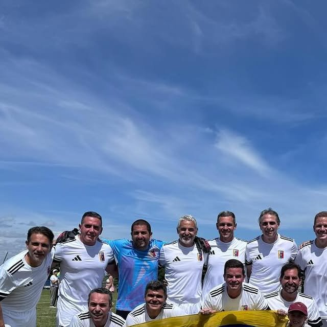

Asociación Venezolana de Médicos Futbolistas
Médicos
en la cancha
La selección de médicos de Venezuela. Desde 2014 llevamos la vinotinto al Mundial de Fútbol Médico, uniendo deporte, ciencia y hermandad entre colegas.
Costa Rica 2026 · faltan
--días
--horas
--min
--seg

→01Quiénes somos
Una organización científico-deportiva.
 →02
→02Trayectoria
9 mundiales · 4.º lugar en Natal 2014.

→03Costa Rica 2026
12 – 19 de diciembre · San José.

→04Plantilla
Morell Cup y Vogel Cup (+45).
Síguenos